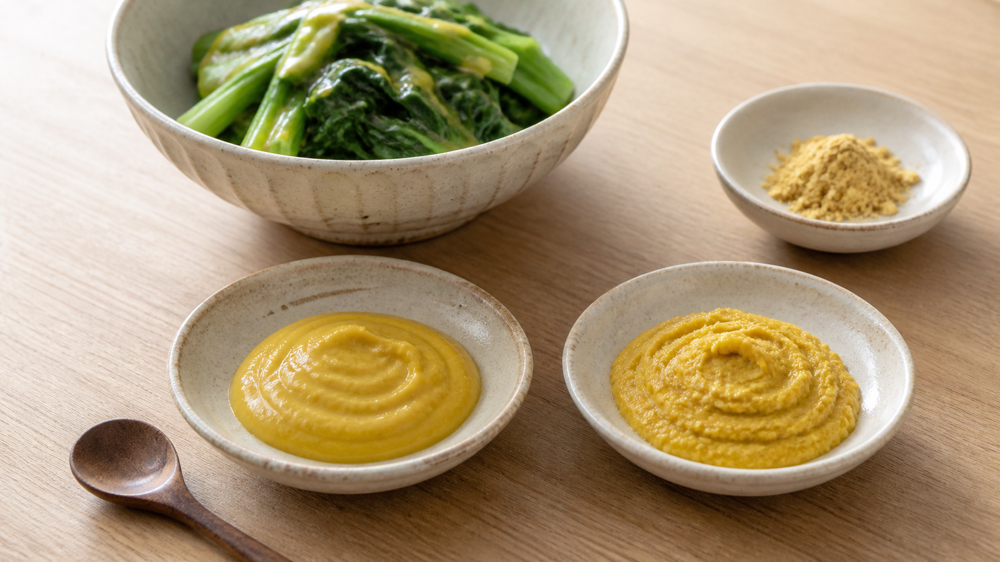

からしは、練ってすぐ食べない。4〜5分で「粉」が薬味になる理由
粉からしを水で練って、すぐ味見したことはあるだろうか。
「あれ、思ったより辛くない。むしろ少し苦い」
ところが、同じ小皿を数分置いてからもう一度なめると、今度は鼻へツンと抜ける。材料は足していない。変えたのは、待ち時間だけだ。
今日の結論
粉からしは、約40℃のぬるま湯で練り、表面を覆って4〜5分待ってから使う。練った直後より、からしらしい辛味が出やすい。
ただし、4〜5分を「どの製品でも辛味が最大になる絶対値」と考えるのは早い。種の種類、粉の細かさ、加工方法、水温で反応は変わる。ここでの4〜5分は、食品メーカーが家庭向けに示す、再現しやすい目安だ。
水を入れた瞬間、辛味づくりが始まる
からしの粉の中には、辛味の材料と、それを辛味へ変える働き手が入っている。乾いたままでは、両者は十分に動けない。粉へ水を加えると、働き手が材料を切り分け、鼻へ抜ける刺激を持つ成分を作り始める。
この働き手を酵素（こうそ）と呼び、からしでは主にミロシナーゼ（myrosinase）が働く。ブラウンマスタードや黒からしに多い辛味の材料はシニグリンで、これが分解されると、強い刺激を持つアリルイソチオシアネートが生じる。
言ってみれば、粉からしは「水を入れて完成させる半調理品」だ。インスタントコーヒーのように溶かした瞬間が完成ではない。水を合図に、小皿の中で調理がもう一段進む。
実際、すりつぶしたからし種を水へ入れた研究では、シニグリンが水へ素早く溶け、同時に溶け出した働き手によって辛味成分へ変わった。別の食品分析でも、種を調味料へ加工すると、元のシニグリンが減り、その分解物が増えることが確認されている。
なぜ、練ってすぐではなく「少し待つ」のか
反応には時間がいるからだ。
エスビー食品は、粉からし小さじ2に対して約40℃のぬるま湯または水を小さじ1加え、覆いをして4〜5分置く方法を案内している。同社は、すぐ使うと苦味を感じる場合があり、ぬるま湯のほうが辛味を出しやすいとも説明している。
ここで大切なのは、熱ければ熱いほどよいわけではないこと。からしの働き手は、たんぱく質でできている。高温へ長くさらすと形が崩れ、働きにくくなる。白からし由来の働き手を調べた研究では、60〜80℃で加熱すると時間とともに働きが落ち、10分を超える加熱では90％を超えて失活した。
研究室の条件を台所へそのまま移すことはできないが、少なくとも熱湯を注ぐ合理的な理由はない。温度計がなければ、熱湯を冷まして、指を入れずに触れられる程度のぬるさを目安にする。正確に再現したいなら、40℃前後を測ればいい。
いちばんわかりやすいのは、2皿で比べること
読むだけでは、辛味はわからない。粉からしが家にあるなら、次の小さな比較をしてみよう。
- 小皿を2枚用意し、それぞれへ粉からし小さじ1を入れる。
- それぞれへ40℃前後のぬるま湯小さじ1/2を加え、同じ回数だけよく練る。
- Aは練った直後、Bはラップをして4〜5分後に、米粒より少ない量を味見する。
- 苦味、舌の刺激、鼻へ抜ける辛味を比べる。
刺激が強いので、いきなり多量を口へ入れない。目や鼻を触らず、子どもと行う場合は大人が量を管理する。製品によって差が小さいこともあるが、それも失敗ではない。粉の種類や保存状態が結果へ影響した可能性が見えてくる。
待ち時間を、そのまま一品へ変える
せっかく練るなら、比較だけで終わらせない。からしが育つ4〜5分の間に、小松菜をゆでる。
小松菜のからし酢みそ（2人分）
材料
- 小松菜 1袋（約200g）
- 粉からし 小さじ2
- 40℃前後のぬるま湯 小さじ1
- みそ 大さじ1と1/2
- 米酢 大さじ1
- 砂糖 小さじ2
作り方
- 粉からしをぬるま湯でよく練り、ラップをして4〜5分置く。
- その間に、小松菜を洗う。沸騰した湯で茎から入れ、全体を1分ほどゆでる。冷水に取り、水気をしっかり絞って4cm幅に切る。
- 待ったからしへ、みそ、米酢、砂糖を加えて混ぜる。
- 食べる直前に小松菜と和える。
酢やみそは、からしを待たせた後に混ぜる。この順番なら、まず水と粉だけを同じ条件で反応させられる。作った和え物は清潔な容器へ入れて冷蔵し、翌日までを目安に食べ切る。香りの強さを楽しむなら、作り置きより食べる直前に和えるほうが向いている。
4〜5分は、魔法の数字ではない
料理科学で危ないのは、わかりやすい数字を見つけた瞬間に、万能の正解へ変えてしまうことだ。
水を加えると辛味づくりが始まること、高温が働き手を弱らせることには、化学的な根拠がある。一方で、「家庭のすべての粉からしは5分で辛味が最大になる」と示した比較試験は、今回の調査では確認できなかった。
だから結論は、派手ではない。でも使える。
まずは約40℃、4〜5分。次に、自分の粉からしで直後と待った後を比べる。
からしの辛味は、チューブから押し出すだけのものではない。水と時間を渡せば、小さな皿の中で自分で作れる。
参考文献
- Cools K, Terry LA. *The effect of processing on the glucosinolate profile in mustard seed*. Food Chemistry. 2018;252:343-348. https://doi.org/10.1016/j.foodchem.2018.01.096
- Borek V, Morra MJ. *Factors affecting the dissolution and degradation of oriental mustard-derived sinigrin and allyl isothiocyanate in aqueous media*. Journal of Agricultural and Food Chemistry. 2000;48(5):1893-1897. https://pubmed.ncbi.nlm.nih.gov/10820112/
- Vető-Kiszter A, Schuster-Gajzágó I, Czukor B. *Heat sensitivity of different mustard (Sinapis alba L.) genotype myrosinase enzyme*. Acta Alimentaria. 2009;38(1):17-26. https://doi.org/10.1556/AAlim.2008.0025
- エスビー食品「粉からし・粉わさび 使い方を教えてください」https://www.sbfoods.co.jp/customer/detail/00346.html
- Okunade O, et al. *Biologically Active Compounds in Mustard Seeds: A Toxicological Perspective*. Foods. 2021;10(9):2089. https://pmc.ncbi.nlm.nih.gov/articles/PMC8472142/
※本記事は料理中の辛味形成を扱うもので、病気の予防や治療効果を示すものではない。からしにアレルギーがある人は使用しないこと。